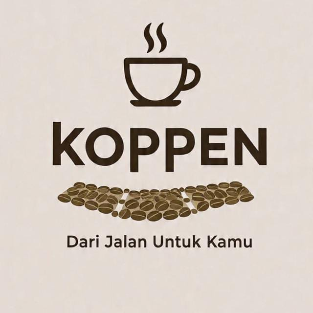
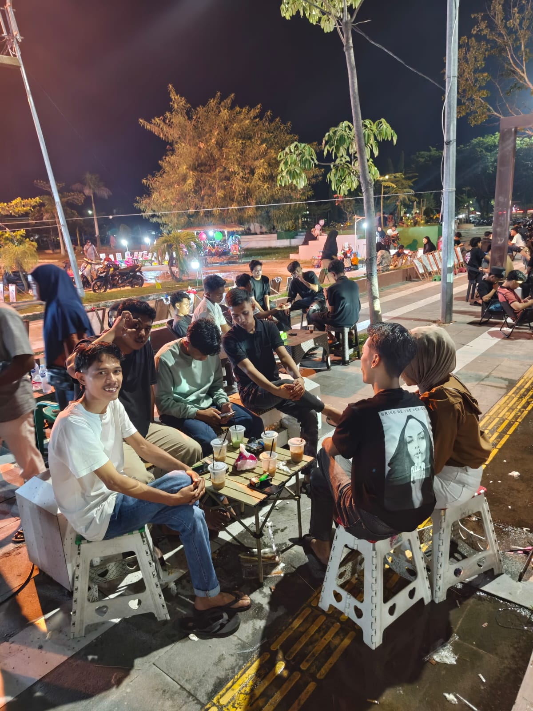
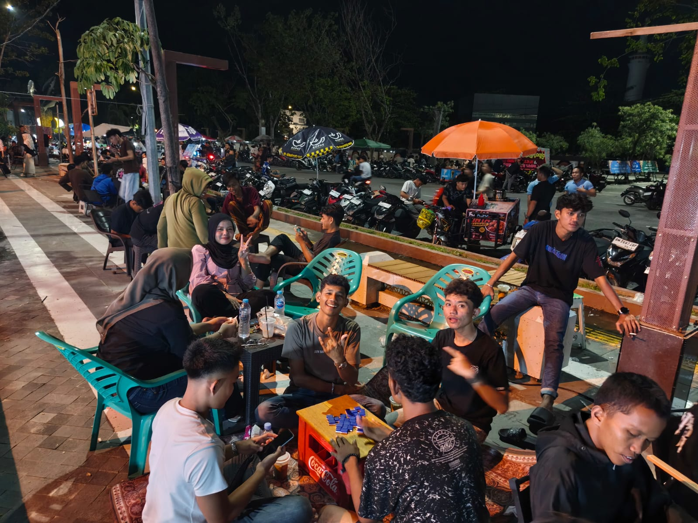
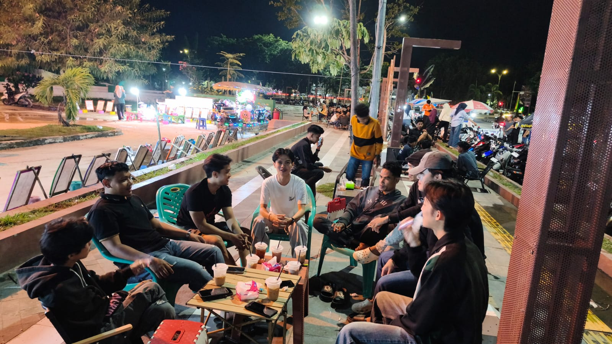

Terinspirasi dari Jalanan
Koppen_Street terinspirasi dari suasana angkringan dan kehidupan jalanan yang sederhana, hangat, dan dekat dengan berbagai kalangan.
Kopi & Cita Rasa
Menghadirkan minuman yang nikmat, sederhana, dan cocok untuk dinikmati kapan saja.
Kebersamaan
Tempat untuk berkumpul, ngobrol, berbagi cerita, dan menikmati waktu bersama.
Nuansa Jalanan
Mengambil inspirasi dari angkringan yang santai, sederhana, dan dekat dengan masyarakat.
Dekat dengan Pelanggan
Kami ingin setiap pelanggan merasa nyaman dan menjadi bagian dari Koppen_Street.
Lebih dari Sekadar Kopi
Koppen_Street bukan hanya tempat menikmati kopi, tetapi juga tempat berkumpul, berbagi cerita, dan menikmati suasana santai.
| Aspek | Koppen_Street | Pengalaman |
|---|---|---|
| ☕ Kopi | Berbagai pilihan kopi dengan cita rasa yang nikmat. | Kopi yang cocok dinikmati kapan saja. |
| 🥤 Non-Kopi | Pilihan minuman non-kopi yang segar dan terjangkau. | Cocok untuk pelanggan yang tidak minum kopi. |
| 👥 Komunitas | Tempat bagi anak muda dan pecinta kopi untuk berkumpul. | Berbagi cerita, berdiskusi, dan bersantai. |
| ⭐ Kualitas | Mengutamakan bahan yang baik, kebersihan, dan rasa konsisten. | Pelayanan ramah dan pengalaman menyenangkan. |
| ❤️ Suasana | Konsep kedai jalanan yang sederhana, santai, dan kekinian. | Nyaman dan dekat dengan pelanggan. |
Koppen_Street — Lebih dari Sekadar Kopi
Kopi nikmat, suasana santai, dan teman terbaik di setiap perjalanan.
Tempat



Nilai-Nilai Kami
Keberlanjutan
Koppen_Street berkomitmen untuk terus berkembang dengan menjaga kualitas kopi, meningkatkan pelayanan, dan menghadirkan kegiatan komunitas yang positif. Ke depannya, Koppen_Street akan terus berinovasi dalam menu, suasana, serta kegiatan agar tetap dekat dengan pelanggan dan komunitas.
Komunitas
Komunitas Koppen_Street adalah wadah bagi pecinta kopi dan anak muda untuk berkumpul, berbagi cerita.
Kualitas Tanpa Kompromi
Koppen_Street selalu mengutamakan kualitas dalam setiap sajian. Kami memilih bahan yang baik, menjaga proses pembuatan dengan teliti, dan memastikan setiap minuman memiliki rasa yang konsisten. Bagi kami, kepuasan pelanggan adalah prioritas, sehingga kualitas rasa, kebersihan, dan pelayanan selalu dijaga tanpa kompromi.